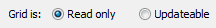
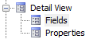
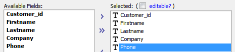
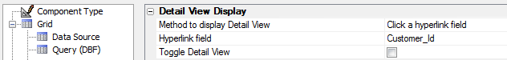
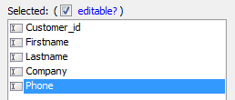
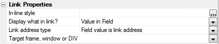
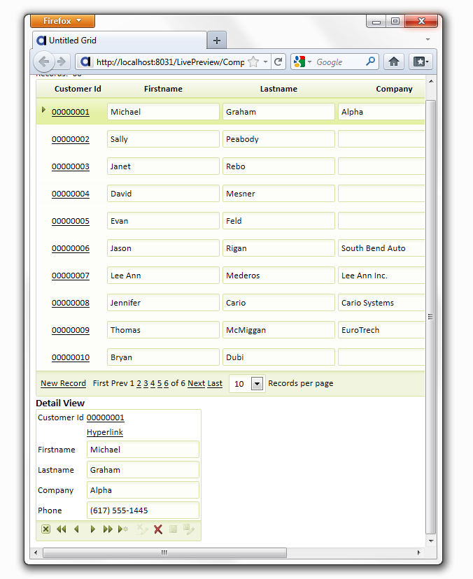

Adding a Detail View Form
Open the Detail View
|
Opening a Grid Component from the HTML Editor
-
In the Web Projects Control Panel select an A5W page that contains a grid component.
Click Edit to display the HTML Editor.
Double click the grid component that is on the page.
-
Click Yes to agree that you want to edit the component.
-
Display the Component Type page.

-
Select the Read only radio button.

-
Check the Grid contains a 'Detail View' part check box. The Detail View is the form used to add, delete, and edit records.

|
Detail View Fields and Field Properties:
Open the Grid Builder.
-
Open the Component Type Page, click Grid is:Read Only, and check the Grid contains a 'Detail View' part check box.
-
As with a grid, you must define the type of data you will use and the table from which the data will be drawn. Open to the Data Source page and choose .dbf or SQL for your data type.
-
Go to Grid > Query (DBF) or Grid > Query (AlphaDAO) and establish which .dbf or SQL tables you will use..
-
Display the Detail View > Fields page.
 -
Select fields in the Available Fields list and move them to the Selected list, as you would with any grid. Use the arrow key to move them. If you are using AlphaSports Customer grid, for example, select the "Customer_Id", "Firstname", "Lastname", Company", and "Phone" fields and then click
 .
.

-
Check the Detail view is editable check box.
-
Click OK to change all the fields on the Detail View to editable TextBox controls.
-
On the Grid Builder Design page under Grid open the Properties page.
-
On the Properties list that opens find Detail View Display properties. The Hyperlink field property will be displayed here. Click the dropdown button next to Hyperlink field.
-
Select a field, like the "Customer_Id" field, in the Hyperlink field list and click OK. This is the field that will connect the record in the Detail View form with the record in the grid. Both the grid and the detail view forms must have a unique key value that links them together.


The Hyperlink field set to Customer_Id.
|
-
Display the Grid > Fields page.
-
Select a field in the Selected Fields list, like Customer_ID, and look at the Field Properties list on the right side of the Fields page.
-
Under Display Settings find Control type. Click the button
 next
to the property.
next
to the property. -
The Select Control Type dialog will open. Change the Control from 'Textbox' to 'Link'. The Customer_Id field will uniquely connect each record in the grid to its detail view.
-
Below the Display Settings section you should now see a Link Properties section open.
 -
Under the Link Properties find the Link address type property. Click the dropdown and select "DetailView link".
-
Change the labels used for the Firstname and Lastname fields.
-
Click Save and close the Grid Builder. This returns you to the HTML Editor.
|
Previewing a Detail View
From the Web Projects Control Panel, right click on the Component you would like to view. Click
 on the
dropdown toolbar to preview the page in the Working Preview
mode. You can also open your component and view it in Working Preview by
clicking the Working Preview tab. To see your Detail View in
Live Preview, click the
Live Preview tab and, from the dropdown list that appears, select
Full Preview. You can then select a browser
from which to view your component from the bottom of the Live Preview page.
Of course, you could also open a new A5W page, save your component inside of
that A5W page, and then publish it by clicking publish or publish to local
webroot. You could then open the A5W file to see your component. The important difference from previewing in your local webroot is that files previewed to the Live Preview directory can not be seen by web users.
on the
dropdown toolbar to preview the page in the Working Preview
mode. You can also open your component and view it in Working Preview by
clicking the Working Preview tab. To see your Detail View in
Live Preview, click the
Live Preview tab and, from the dropdown list that appears, select
Full Preview. You can then select a browser
from which to view your component from the bottom of the Live Preview page.
Of course, you could also open a new A5W page, save your component inside of
that A5W page, and then publish it by clicking publish or publish to local
webroot. You could then open the A5W file to see your component. The important difference from previewing in your local webroot is that files previewed to the Live Preview directory can not be seen by web users.In your browser a Detail View might look like this...

Experimenting with the Detail View
Click New Record.
Enter values into the Detail View fields.
Click Add.
Select a record in the grid.
Click Delete.
See Also